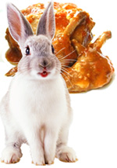

Заяц — наиболее распространенный вид мелкой промысловой дичи. Живет практически везде. Образ жизни одинокий. Кормиться выходит вечером, в сумраке, или ранним утром. Живет, как правило, в местах своего рождения. В случае опасности удаляется от обжитых мест не более чем на 2 км, затем возвращается назад. Зимой зайцы, живущие на возвышенностях, спускаются в низменности. В районе обитания у зайца проложены свои тропинки. Заяц – зверь очень чистоплотный. Любит причесывать шерсть лапками и умывать языком.На выпасе зайцы постоянно подпрыгивают. Обнаружив опасность, стучат лапками. С кормежки возвращаются под утро и прячутся в своем логове. В логово залазят задом, запутывая следы против ветра. Для логова заяц выбирает солнечные, защищенные от ветра места, тихие, сухие. Оно может быть и под деревом, кустом, в сухой траве, на пашне и в озимых и т. д. Окраска хорошо скрывает зайца в среде обитания. 3 рационе зайца разнообразная растительная пища. Зимой питается озимыми и оставшимися на полях корнеплодами, а также сухой травой.
Любит обгрызать кору с деревьев, особенно с акации, деревьев с мягким стволом фруктовых деревьев. Бороться с этим ущербом можно, с началом зимы обвязывая стволы деревьев.
Самым вкусным мясом считается мясо зайцев не старше одного года. Молодые зайцы имеют толстенькие окорочка, короткую шею и мягкие ушки. Мясо зайца покрыто пленкой, от которой его нужно освободить острым ножом. Оставить нужно только тонкий слой кожицы. Оно жесткое и поэтому перед употреблением его нужно поместить в маринад не менее чем на 10 часов, что придаст ему дополнительную мягкость. Маринад может быть водно-уксусным раствором или уксусно-растительным или молочной сывороткой.
Вкусовые качества зайцев зависят от видовых признаков, способов добычи, возраста и, наконец, от изменений, вызванных тем или иным способом хранения. Мясо зайца плотной консистенции, почти без жира и имеет специфический привкус.
Чрезвычайно сказывается на качестве мяса неправильное хранение. Если длительно хранить замороженную тушку на воздухе или в помещении, она теряет много воды, мясо становится темным под воздействием воздуха и (или) света. При хранении при очень низких температурах (-25 и ниже), то при размораживании такое мясо не удерживает сок.
Для сохранения оптимальных качеств заячьего мяса необходимо:
1. дать стечь максимальному количеству крови
2. хранить замороженные тушки в плотных пакетах, при
не очень низких температурах
Возраст зайца можно определить следующим образом – у молодого передние ноги легко можно переломить, у него толстые колени, короткая и толстая шея, мягкие ушки. Старые же зайцы длинные и более худые.
Для улучшения вкуса мяса некоторые мочат его (уже потрошеного) несколько часов в воде, уксусе, либо квасе. Другие только натирают его уксусом, оставляют так на пару дней, а перед готовкой вымывают и очищают. Перед приготовлением мясо рекомендуется выдерживать в маринаде, шпиговать салом и использовать большое количество жира.
Полезные свойства зайчатиныЗайчатина необыкновенно полезна и питательна. Недаром лучшую часть говяжьего филе мясники называют «зайчиком».
Мясо зайца имеет более сладкий вкус, что и делает его уникальным в своем роде. Оно является диетическим мясом.
Белка в нем содержится на порядок больше чем в другом мясе, но в тоже время оно содержит минимум жиров, что немало важно для полноценного диетического рациона.
Это превосходное, нежное, вкусное мясо содержит витамины B6, C, PP, B12, а также железо, кобальт, фосфор, калий, фтор и марганец.
Зайчатина помогает сбалансировать человеку оптимальный обмен веществ, за счет которого и улучшается в целом здоровье. Одним словом, достоинств у мяса много. К тому же оно является не заменимый продукт в детском питании.
Зайчатина полезна при заболеваниях желчных путей, печени, аллергиях и гипертонии, а также при болезнях пищеварительной системы.
К сожалению, у нас пока нет информации о вредных свойствах данного продукта.
Если Вам что-то о них известно, пожалуйста, напишите нам по адресу admin@edaplus.info.